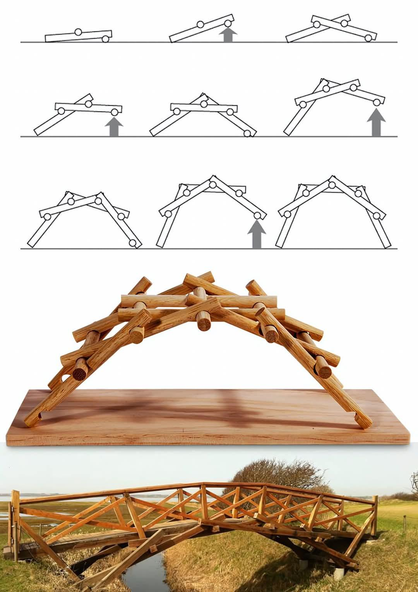

學習任務
本頁以達文西自承式橋為主題，連結生活科技中的結構設計、材料使用、測試修正與工程溝通。學生將先理解橋梁如何靠木棒彼此卡合而穩定，再進入材料包組裝與承重探究。
01
基本介紹
達文西橋通常指 Leonardo da Vinci 所提出的自承式橋構想。這類橋梁可以使用長度相近的木桿互相穿插、壓住與支撐，不需釘子、榫卯、繩索或膠水即可成形。它特別適合用來作為科技教育中的結構探究活動，因為學生能直接看到「構件排列」如何改變整體穩定性。
歷史上，達文西曾在 1502 年為鄂圖曼帝國蘇丹 Bayezid II 提出跨越金角灣的橋梁構想；近代也有以達文西構想為靈感的橋梁實作案例，例如 2001 年在挪威完成的縮小版達文西橋。課堂中的木棒達文西橋，則更聚焦於自承式結構的快速組裝與力學觀察。
02
結構與力的傳導
摩擦力
木棒接觸面之間的摩擦力能阻止構件滑脫。接觸面越穩定、受壓越明確，橋體越不容易散開。
壓縮力
橋體重量與外加載重會讓木棒互相壓緊。自承式橋不是靠黏著，而是靠構件互相壓住形成支撐。
交錯卡合
木棒彼此上下交錯，形成連續的受力路徑。只要其中一段滑脫，整座橋可能連鎖失穩。
拱形與荷重分散
橋體逐漸形成近似拱形的輪廓時，載重能沿構件傳遞到兩端支點，減少單點承受過大力量。
荷重
支點
支點
摩擦接點
摩擦接點
力往左端傳遞
力往右端傳遞
1. 荷重向下橋面承受重量後，木棒彼此更緊密接觸。
2. 接點產生摩擦接觸面阻止木棒滑動，是自承式結構穩定的關鍵。
3. 構件互相壓縮交錯木棒把力量分散到相鄰構件，而不是集中在單一木棒。
4. 支點承接力量近似拱形的橋身會把力量導向左右兩端支點。
03
生活中的應用

達文西橋的學習重點不只在「橋」，也在於觀察生活中許多結構如何透過重複構件、交錯排列、接觸摩擦與支點配置來取得穩定。學生可以把這張圖作為觀察提示，連結橋梁、臨時通道、木構裝置、展場結構與工程測試等情境。
臨時性結構
自承式橋的特點是組裝與拆卸快速，適合討論臨時通道、戶外活動裝置或救災情境中的快速構築概念。
免固定件設計
不使用釘子與膠水的設計，能引導學生思考如何利用幾何、接觸面與受力方向完成穩定結構。
橋梁與建築美學
拱橋、木構建築與展場裝置常透過重複構件形成節奏感，兼具結構功能與視覺美感。
工程測試與改良
改變木棒數量、跨距、接點長度與載重位置，可以形成可測量的工程探究活動。
04
課程動手實作：巧浣熊 DIY 材料包
本課程動手實作採用木百貨網站所列「巧浣熊 DIY材料包-達文西橋」，該商品屬巧浣熊 STEM 教具相關材料包。以下組裝流程依材料包課堂使用情境與達文西橋自承式結構原理設計；實際零件數量、木棒尺寸與包裝內容請以材料包現品為準。
清點材料與建立規則
確認木棒數量是否足夠，約定組裝過程不使用膠水、膠帶、橡皮筋或額外固定件，讓橋體只靠結構卡合。
放置底部支撐木棒
先平行放置兩根底棒，作為左右支撐。兩棒間距會影響橋面寬度與穩定性。
加入第一組交錯木棒
將木棒斜放並跨過底棒，使木棒彼此壓住。此時要觀察接觸點是否穩定，避免角度過大導致滑脫。
重複延伸橋身
依相同規律向前增加木棒組數，讓每一組都壓住前一組。組數越多，橋身會逐漸形成拱形輪廓。
檢查對稱與接點
從側面檢查橋體是否左右對稱，從上方檢查木棒是否偏斜。若接點太短或角度不均，橋體容易扭轉。
進行承重測試
逐步增加小砝碼、硬幣或課堂指定重物，記錄橋體變形、滑動位置與最大承重量。
05
科展作品範例
參考資料
本頁背景與原理內容參考 Leonardo da Vinci 自承式橋、金角灣橋梁構想、近代挪威實作案例，以及 Bridge 資料夾內科展作品範例整理而成。